| Prev | Chapter 2. Conferences | Next |
The Management Area allows you to control the different parts of your conference the following sections will show each area of the Conference Management.
The frames surrounding each management area, give you access to either the modification area above or to a display of that area.

Clicking on the left hand icon  will take you to the Display area for the area you are on, e.g. contribution (See Contribution Diplay).
will take you to the Display area for the area you are on, e.g. contribution (See Contribution Diplay).
Clicking on the name of the event or contribution etc will take you directly to the management area for the event / contribution.
From within the Main Tab you can (Some parts of the screen may not be visible in the pictures):
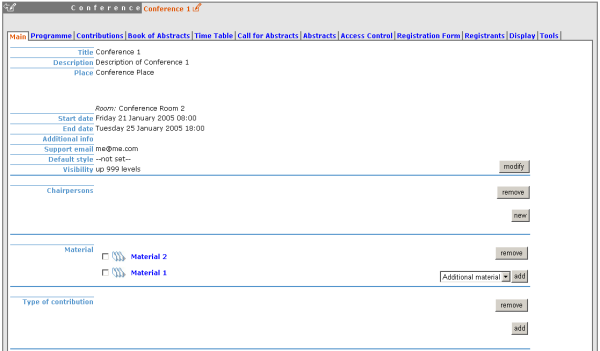
Modify the general information of the conference, e.g. name, Description, dates etc. The Support email if you supply one will be the support email linked from the bottom of the Display Menu , in the Conference Display Area (See Conference Display).
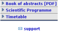
Add or remove chairpersons to/from the conference
Add or remove Material (See Material)
Create a type of contribution for your conference, for example, oral presentation. This contribution type can be chosen for any abstracts or contributions added to the conference.
Close the conference from the status area which means it is over, it cannot be accessed by anyone once it has been closed.
From the program tab you can add / remove tracks and access each of the tracks (See Tracks below)

Tracks are parts of the conference in which abstracts and contributions can belong to. Inside those tracks you can do the following things:
Main - Modify the Code; a code can be used if you prefer to use codes as apposed to using long titles. The Title and the description can also be modified.

Coordination Control - Assign 'Track Manager(s)' to the track who can decide what is accepted into their track. A Track Manager does not have modification access to the rest of the conference, they have access only to the modification of their Track.
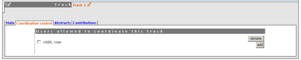
Abstracts - Show any abstracts which have been submitted into the track, the Track manager can then propose to accept or reject it. Only the Conference Manager can have the final say in whether an abstract is accepted / rejected. (See Abstracts Management)
Contributions - Show any contributions that belong to that track (See Contributions)
The Contributions Tab shows all the contributions in the conference these may have come from either accepted abstracts or added by the conference mangers.

From the contributions tab you can:
Create new contributions
Access Contributions (See Contributions).
Search for certain contributions
Move contributions
Create a PDF of contributions
Show the authors of contributions
Create a zip file of material from contributions
Create a zip file of all the proceedings.
Each contribution has its own management area, (Some parts of the screen may not be visible in the pictures).
From inside the Main tab you can:

Modify the main details of the contribution for example, name, duration etc.
Change which track this contribution is assigned to.
Change which session this contributions is included in (See Timetable Management).
Add / change authors and co-authors.
Add / change the presenters of the contribution.
Add Material to the contribution and access the material (see material).
Withdraw the contribution from the Conference.
From the subcontributions Tab you can:

Add / Remove a sub contribution.
Change the order of sub contributions by using the drop down priorities.
Access each sub contribution (See sub-contributions).
From the Access Control Tab you can:

List the users that can submit material into the contributions (See Material).
List the users that can Modify the contributions
Make the contribution Public or Private: Public: Any user can view the contributions. Private: Only users listed in the access / modification / submission control can access the contribution.
List the domains that can access the contribution (only available if contribution is public)
From the Tools tab you can:
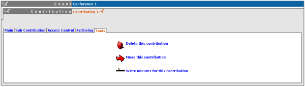
Delete the Contribution
Move the Contribution
Write the minutes for the contribution, these will be attached to the material for the contribution (see Material).
Sub Contributions can be added to contributions to organise the contribution further.

From inside each sub contribution you can modify the general details, add or remove presenters and attach material the same as you can for contributions. From the Tools tab in a sub contribution you can delete that sub contribution or write the minutes for it, these will be attached to the material for the sub contribution.
Material can be submitted by a user once their abstract has been accepted and made into a contribution. Material can also be added by the Conference Manager into the conference directly, or into a contribution or sub contribution. From inside a contribution, you can add - General Material, Slides, Videos, Minutes or Papers.

Within each of those types you can add files or URL links as the resources for these materials, you can also modify the general details for the material.
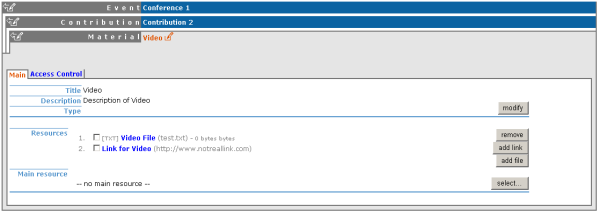
When you add a paper, the main resource for that paper will show in the proceedings document you can create from the contributions tab in the conference. For each material access rights can be set, from inside access control you can list those users that can view the material.
The abstracts Management in Indico is in three parts - Calling for Abstracts, the Abstracts themselves and the Book of Abstracts.
The call for abstracts needs to be enabled first from the 'Call for Abstracts' tab. From here you can set the submission dates and the deadline for any abstract submissions. You can also add any announcements. If you want to allow any users to make submissions after the deadline you can give those users access to do so.
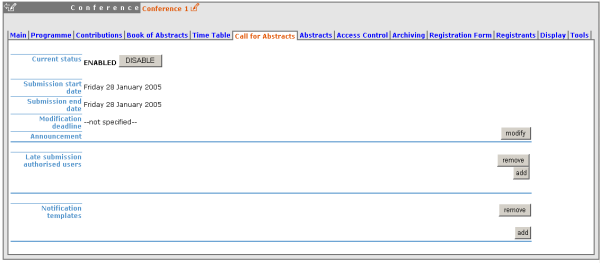
When a user submits an abstract they will receive an email letting them know the abstract has been submitted successfully. You can customise this email by adding your own Notification Template. If you do not create a notification template a default email will be sent. You can include in this template information about the conference or the abstract for example the conference title, to do this insert
%(conference_title)sin place of where you would like the conference title to be. The tags available to put in your template are listed in the 'Available Tags' box.

The Abstracts tab shows all the Abstracts that have been submitted to the conference:

From the abstracts tab you can add new abstracts, create PDFs of the abstracts, create an XML file of abstracts and get the authors list. You can also access each abstract; an abstract can be in one of 10 states:
An abstract is can be either submitted by a user or manually added by a track manager. Once a abstract is accepted it is automatically changed into a contribution and added to the contributions list in the conference (See Contribution Management).

The Conference manager from inside Abstract Management can change the status for example by accepting it or marking it as a duplicate.
The main details of the abstract can be modified and the track to which it is associated with can be changed as well as the user that submitted it. Any comments made by the Track Manager or Conference Manager while changing the status of the abstract can be viewed from 'Track judgement'

Internal comments can be made, and a notification log can also be viewed from inside the abstract management.
The 'Book of Abstracts' tab lets you add any additional comments that you would like to appear in the book of Abstracts, this is a PDF file which can be generated from the conference display (See Conference Display) containing all the abstracts.
From the timetable tab in a conference you can organise your conference. When you start with a timetable it will look like this:

You can modify the start and end dates of the timetable, and you can start adding sessions, breaks and contributions to your timetable.
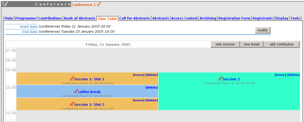
A session is essentially a time slot to organise your conference with, one way can be to use a session for each track. There can be more than one session happening at once for example different parts of the conference can be happening at the same time but in different rooms. A session can also be split into slots however these are optional, they can be used when the session takes place over more than one period of time, for example you may have a morning slot then a break and then an afternoon slot within a session or one day you have a session on a particular subject for a couple of hours and then two days later you have another session on that subject, this can be done using slots.
To add a session to your timetable, use the 'new session' button at the top of the timetable, this will present you with a form to fill in with the details of your session.
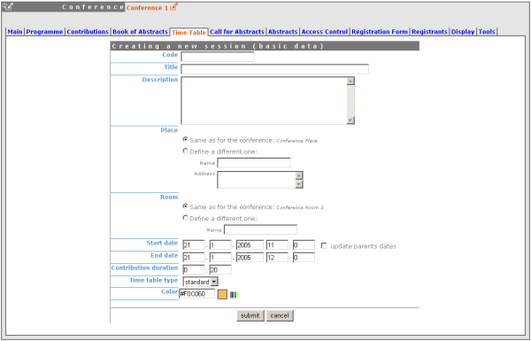
You can use the 'update parent's dates' option if you need to change the times of the timetable to accommodate your session times.
Once the session is created it will appear in your timetable. The same procedure is followed to add a break by using the 'new break' option. You can then modify the session by clicking on the session name this will take you to the timetable tab within the session (see Session Management). If you just want to quickly change the location or time of an entry in the timetable you can use the modification icon next to the name.
To add a contribution to your timetable use the 'add contribution' option this will take you to a screen where you can select the contribution(s) you want to add.
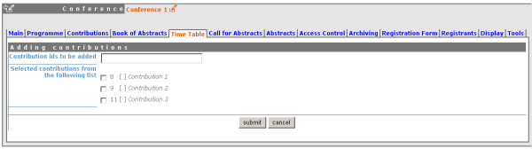
Once the contribution is added to your timetable you can click on the contribution name to edit the time and duration of it within the timetable.

You can remove sessions, breaks and contributions by clicking on remove / delete in the top right corner of each block. You can also move sessions to another starting date / time if needed.
From the timetable tab in Session you can: Add slots to the session, Edit slots inside the session, Delete slots inside the session, Add breaks and Add contributions.
A session can be split into slots (See Adding Slots to Session) however these are optional, they can be used when the session takes place over more than one period of time. A session is defaulted to having one slot already when it is created.
From the main tab in session you can, modify the general session information, add conveners and add material.
From the contributions tab you can see all the contributions that are part of your session. These contributions will only be shown once they have been added (See Adding Contributions to Sessions).
From the Access control tab in session you can set the access rights for modification, access and domain control the same as you can for most of the conference; the only difference is the Co-ordination control in which you can assign someone to be the co-ordinator which means they can add and remove contributions and breaks to that particular session.
From the Tools tab in session you can delete that session or write minutes for the session.
To add a slot use the 'new slot' option this will take you to a form to fill in which will create your slot. When you need to edit a slot use the 'edit slot' this will take you to a screen with the options to change times, titles etc.

You also have the option to update the parent dates or to move the entries inside the slot. Update Parent Dates allows you to update the session times if the slot will be outside the sessions original times. The Move entries option means if for example you choose to make the slot an hour earlier, you can either leave the contributions / breaks as they are or you can tick the box and move all the entries an hour earlier too.

These slots will appear in the main conference timetable like this:

To add contributions to a session you first need to import them from the main conference, to do this use the 'contribution tab' inside the session:
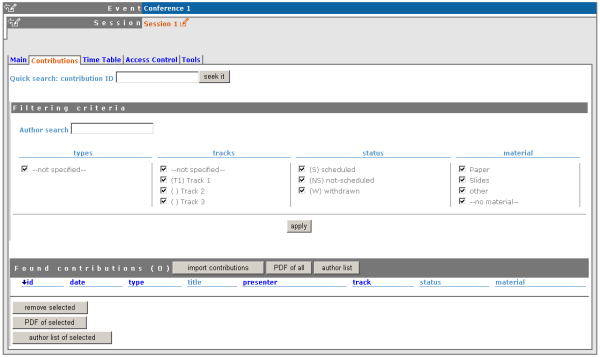
Click on 'import contributions', this will take you to a screen where you can select the contributions you want to include in your session.
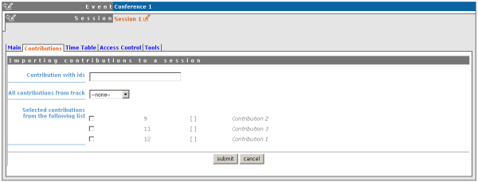
Once you have selected the contributions they will appear inside the contributions tab in the session. You can then use the 'add contribution' option from the session and select from the contributions you imported. When you have added a contribution to your session/slot you can edit the times and duration by clicking on the contribution name.
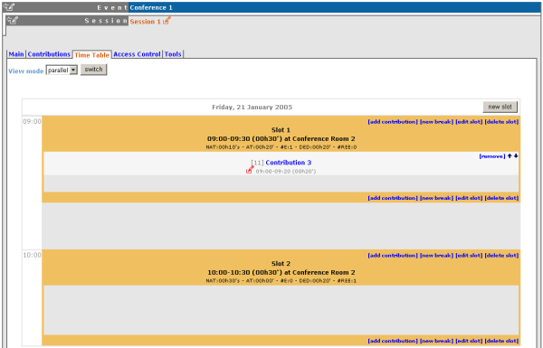
Access Control in a conference is similar to that in a Category. There is Modification control, Domain Control and Access Control. When adding to the Access and Modification lists, you can also add Groups of users if any have been defined by Administration.
Modification Control Only the managers listed in the modification control, the creator of the conference and any administrators can access the Management Area of the conference.However you can add a Modification Key which means anyone with this key can modify the conference without logging in.

Access Control When the conference is public - Anyone can view the conference including the programme, timetable, abstracts etc. When the conference is private - Only those in the access list, conference managers and administrators can view the conference.

When private you can also add an Access Key which means anyone with this key can access the conference without logging in.
Domain Control This is not available when the conference is private, but when it is available it allows you to specify which IP addresses can access the conference.
You may wish to have some kind of registration process for those attending your conference in which you can give the registrants options of accommodation or any specific needs. The Registration Management comes in two parts - the Registration Form and the Registrants.
From the Registration Form tab you are able to firstly, enable or disable the Registration. You can also modify the start/end dates of registration, the maximum number of registrants you will take, any announcments and if you want to send email notifications to people when a new registrant applies.
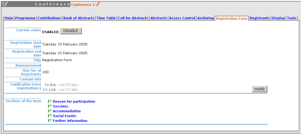
You can choose which forms you wish to use for your registrants see the forms listed below, to enable or disable one of these forms, click on the  image next to that form, when it is red it is disabled and green for enabled. Clicking on the form name will let you modify the form to allow the registrants to enter the information you need (See Registration Area).
image next to that form, when it is red it is disabled and green for enabled. Clicking on the form name will let you modify the form to allow the registrants to enter the information you need (See Registration Area).
The Reason for participation form allows you to ask the registrant why they want to particpate, from this form you can modify the question and title of the form.
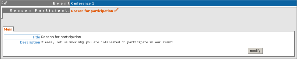
The Sessions form allows you to add which sessions from your conference you would like people to register for, from the form you can also change the title and description.
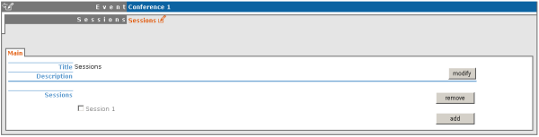
The Accomodation form lets you add or remove the different types of accomodation you can book your registrants into or give them the choice to book their own.

The Social Events form allows you to add / remove any social events that registrants can register on, when you add an event you add the title you wish this event to have.

The Further Information form gives you the opportunity to add any additional information for the registrants.
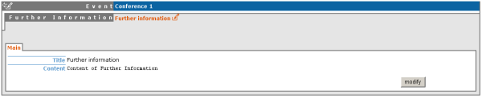
The Registrants Tab will show a list of all the registrants that have registered for your conference.
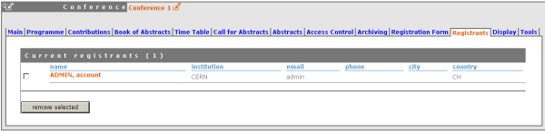
Clicking on the registrants name will show you all their details and the information they provided in response to the form's questions.
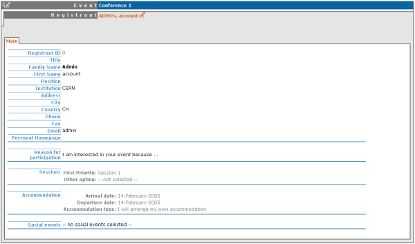
The display area allows you to customise your conference, you can customise the menu that the will be shown in the conference display (See Conference Display), change the colours of the conference background / text and you can add a logo to your conference.

The menu customisation allows you to activate or disable menu items and move them up or down the list. You may add your own external links or just customise the already existing system links.
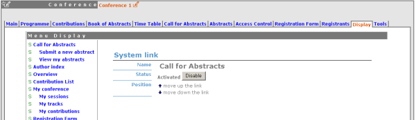
You can also add external links to your menu by using the 'add link' option.
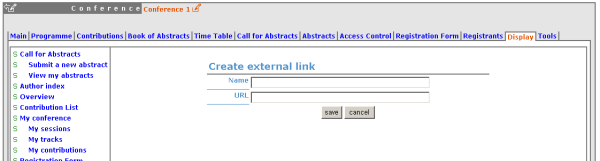
If you want to add spaces between items in your menu you can use the 'add space' option.

You can change the background colour of the conference by using the 'title background colour' option.
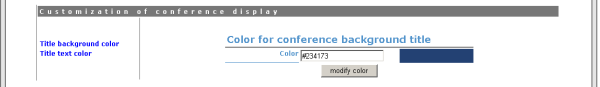
The same can be done for the text colour by using the 'title text colour' option.
If you want to add your own logo to the conference display you can add it from the logo area in display. You can browse for you logo, save it, and see it in the preview box.

The conference Tools allow you to make certain actions on the whole of the conference.

The delete conference option will delete the whole conference. You will be asked to confirm deletion first.

Clone the conference if you would like to make another conference the same, you have the option to clone it just once, at fixed intervals or on certain dates.
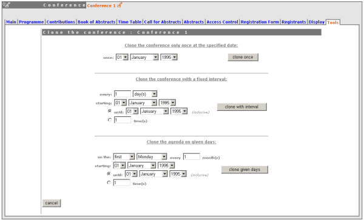
Using the 'Get material package' option you can create a package of all the materials that have been used in the conference.
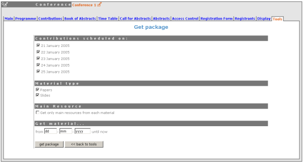
Using the 'Offline web for your conference' option you can create a copy of your conference that can be used offline for example if you wish to store your conference to a dvd.

You can set an an alarm / reminder to alert people about the conference, the alert will be in the form of an email.

This Conference Management Area explained can only be accessed by Administrators or Conference Managers.
 Accepted
Accepted Rejected
Rejected Proposed Rejection
Proposed Rejection Withdrawn
Withdrawn Merged
Merged Submitted
Submitted Under Review
Under Review Duplicated
Duplicated Proposed Acception
Proposed Acception Conflict
Conflict